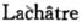

第三版序言
马克思不幸已不能亲自进行这个第三版的付印准备工作。这位大思想家——现在，连反对他的人也拜服他的伟大了——已于1883年3月14日逝世。
我失去了一个相交40年的最好的、最亲密的朋友，我应感谢他的地方是无法用言语表达的。现在，不论出版这个第三版的任务，还是出版以手稿形式遗留下来的第二卷[37]的任务，都落在我的身上了。在这里，我应该告诉读者，我是怎样履行前一项任务的。
马克思原想把第一卷原文大部分改写一下，把某些论点表达得更明确一些，把新的论点增添进去，把直到最近时期的历史材料和统计材料补充进去。由于他的病情和急于完成第二卷的定稿，他放弃了这一想法。他只作了一些最必要的修改，只把当时出版的法文版（“Le Capital”，par Karl Marx.Paris，，1873）中已有的增补收了进去。
在马克思的遗物中，我发现了一个德文本[38]，其中有些地方他作了修改，标明何处应参看法文版；同时还发现了一个法文本，其中准确地标出了所要采用的地方。这些修改和增补，除少数外，都属于本书的最后一部分，即资本的积累过程那一篇。旧版的这一篇原文比其他各篇更接近于初稿，而前面各篇都作过比较彻底的修改。因此，这一篇的文体更加生动活泼，更加一气呵成，但也更不讲究，夹杂英文语气，有不明确的地方；叙述过程中间或有不足之处，因为个别重要论点只是提了一下。
说到文体，马克思亲自彻底校订了许多章节，并且多次作过口头指示，这就给了我一个标准去取舍英文术语和英文语气。马克思一定还会修改那些增补的地方，并且用他自己精练的德语代替流畅的法语；而我只要把它们移译过来，尽量和原文协调一致，也就满足了。
因此，在这第三版中，凡是我不能确定作者自己是否会修改的地方，我一个字也没有改。我也没有想到把德国经济学家惯用的行话弄到《资本论》里面来。例如，这样一种费解的行话：把通过支付现金而让别人为自己劳动的人叫作劳动给予者，把为了工资而让别人取走自己的劳动的人叫作劳动受取者。[39]法文travail［劳动］在日常生活中也有“职业”的意思。但是，如果有个经济学家把资本家叫作donneur de travail［劳动给予者］，把工人叫作receveur de travail［劳动受取者］，法国人当然会把他看作疯子。
我也不能把原文中到处使用的英制货币和度量衡单位换算成新德制单位。在第一版出版时，德制度量衡种类之多，犹如一年的天数那样；此外，马克有两种（帝国马克当时还只存在于泽特贝尔的头脑中，这是他在30年代末发明的），古尔登有两种，塔勒至少有三种，其中一种以“新三分之二”[40]为单位。在自然科学上通用的是公制度量衡，在世界市场上通用的是英制度量衡。在这种情况下，对于一部几乎完全要从英国的工业状况中取得实际例证的著作来说，采用英制计量单位是很自然的。最后这个理由直到今天还有决定意义，尤其因为世界市场上的有关情况几乎没有什么变化，而且正是在那些有决定意义的工业部门——制铁业和棉纺织业，至今通用的还几乎完全是英制度量衡。
最后，我说几句关于马克思的不大为人们了解的引证方法。在单纯叙述和描写事实的地方，引文（例如引用英国蓝皮书）自然是作为简单的例证。而在引证其他经济学家的理论观点的地方，情况就不同了。这种引证只是为了确定：一种在发展过程中产生的经济思想，是什么地方、什么时候、什么人第一次明确地提出的。这里考虑的只是，所提到的经济学见解在科学史上具有意义，能够多少恰当地从理论上表现当时的经济状况。至于这种见解从作者的观点来看是否还有绝对的或相对的意义，或者完全成为历史上的东西，那是毫无关系的。因此，这些引证只是从经济科学的历史中摘引下来作为正文的注解，从时间和首倡者两方面来确定经济理论中各个比较重要的成就。这种工作在这样一种科学上是很必要的，这种科学的历史著作家们一直只是以怀有偏见、不学无术、追名逐利而著称。——现在我们也会明白，和第二版序言[41]中所说的情况一样，为什么马克思只是在极例外的场合才引证德国经济学家的言论。
第二卷可望在1884年出版。[42]
弗里德里希·恩格斯
1883年11月7日于伦敦
[37] 以手稿形式遗留下来的第二卷本来应该包括资本的流通过程（第2册）和总过程的各种形式（第3册），见本卷第13页。——28。
[38] 指马克思自己使用的一本《资本论》德文第2版。有关马克思在这本书上所作的改动的情况，见《马克思恩格斯全集》1989年历史考证版第2部分第8卷《异文表》第854—945页。——28。
[39] “劳动给予者”和“劳动受取者”这些术语在1870—1882年之间，曾为阿· 埃·弗·谢夫莱、卡·施特拉斯布格尔、弗·比策、西·迈尔、亨·冯·济贝耳、路·布伦坦诺、阿·黑尔德、维·伯默特、哥尔茨男爵、阿·瓦格纳、麦·维尔特、约·普林斯-斯密斯和卡·瓦尔克所使用，在《1870年6月波恩工人问题大会记录》（1870年柏林版，编者为委员会秘书L·纳格尔）一书第1—3页中也得到了使用。这两个术语分别代替资本家和雇佣工人。1867年前，马克思在他遗留下来的《资本论》第1卷手稿《第六章。直接生产过程的结果》脚注139中写道：“在目前德语中，资本家即受取劳动的物的人格化叫作Arbeitsgeber［劳动给予者］，而提供劳动的实际工人叫作Arbeitsnehmer［劳动受取者］。”——29。
[40] “新三分之二”是17世纪末至19世纪中叶在一些德意志公国中流通的一种银币，值三分之二塔勒。——29。
[41] 《资本论》德文第2版序言是作为跋发表的，见本卷第14—23页。关于怀有偏见、不学无术的著作家们，见本卷第22页。——30。
[42] 《资本论》第2卷于1885年7月出版，它只包括马克思原来计划中的第二册的一部分内容，即资本的流通过程部分（见本卷第13页）。——30。